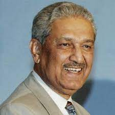

ABDUL QADEER KHAN
1936 - 2021
Father Of Pakistan Atomic Weapons Program
Abdul Qadeer Khan also known as Father of Pakistan Atomic Weapons Program born in 1936 Bhopal British India. A.Q Khan was a Pakistani Nuclear Physicist and Metallurgical Engineer. In 1952 Khan was migrated to Pakistan. He graduated in 1956 with a Bachelor of Science in Physics. From 1956 to 1959, Khan was employed by the Karachi Metropolitian Corporation and applied for scholarship that allowed him to study in West Germany 1961. He switched to the Delft University of Technology in the Netherlands in 1965.
Biographies
- Khan gained fame as a talented scientist at the nuclear plant he worked in. He had special access to the most restricted areas of the URENCO facility.
- In December, 1974, he came back to Pakistan and tried to convince the Prime Minister, Zulfikar Ali Bhutto, to adopt his Uranium route in building nuclear weapons.
- Khan re-organized the Pakistani's national space agency, SUPARCO.
- Khan played an important role in Pakistan's space program, particularly the Pakistan's first Polar Satellite Launch Vehicle (PSLV) project and the Satellite Launch Vehicle (SLV).
- He set up a metallurgy and material science institute in Ghulam Ishaq Khan Institute of Engineering Sciences and Technology .
- Dr. A. Q. Khan Institute of Biotechnology and Genetic Engineering at Karachi University, has also been named in his honor